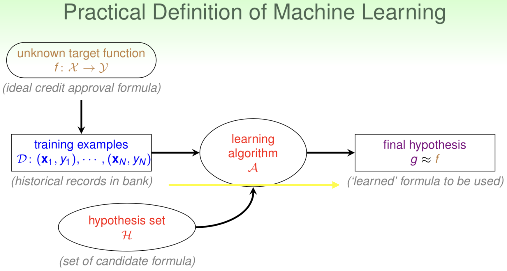

前言
这一系列文章是我在学习台大林轩田教授的机器学习课程的笔记，要比较好地理解相关内容，需要以下学科的基础知识：
- 微积分
- 概率论
- 统计
- 线性代数
- A productive programming language (e.g. Python, C++, etc.)
PS: 如果有一点优化（optimization）的知识就更好了。
本文纯属个人的课程笔记，因此采用便于自己理解和记忆的方式撰写而成，并没有考虑读者的知识背景，敬请谅解。课程大纲
When Can Machines Learn?（何时可以使用机器学习）
- 第一讲：The Learning Problem（机器学习问题概述）
- 第二讲：Learning to Answer Yes/No [二元分类问题]
- 第三讲：Types of Learning（各种机器学习问题）
- 第四讲：Feasibility of Learning（机器学习的可行性）(公布作业一)
Why Can Machines Learn? （为什么机器可以学习）
- 第五讲：Training versus Testing（训练与测试）
- 第六讲：Theory of Generalization（泛化的原理）
- 第七讲：The VC Dimension（VC纬度）
- 第八讲：Noise and Error（噪音与误差）（公务作业二）
以上就是台湾大学林轩田老师讲授的 “Machine Learning Foundations”课程的大纲，可见这门课是侧重夯实机器学习的基础，为下一门姐妹课“机器学习技巧”做铺垫。
课程共8周，每周投入时间不少于3+小时比较妥当。
The Learning Problem
A Concrete Definition
Improving some performance measure with experience learned from data.
上面这句话的意思是指机器学习是这样一个过程: 用从数据中学习到的某种经验，并在某种度量标准之下提升性能的过程。关于机器学习的定义，最权威的定义来自于CMU的Tom Mitchell教授，他是世界级机器学习专家和开拓者，相关内容可以参考其经典著作：《Machine Learning》- Chapter 1.
Formalization of Machine Learning
之前的定义是一种观念上的定义，要使得机器学习可以具体实现，就要借助数学工具，这就需要我们能够给出形式化的定义。
Basic Notations
Input: $\mathbf{x}\in\mathcal{X}$
Output: $y\in\mathcal{Y}$
$\text{Some }\color{blue}{\text{unknown pattern }}\text{to be learned} \Leftrightarrow \color{blue}{\text{Target Function}}$:
$f: \mathcal{X}\rightarrow\mathcal{Y}$
$\color{blue}{\text{Data}}\Leftrightarrow \text{Training Examples}$:
$\mathcal{D}={(\mathbf{x}_1,y_1),(\mathbf{x}_2,y_2),…,(\mathbf{x}_N,y_N)}={(\mathbf{x_n},y_n)}_{n=1}^N$
$\color{blue}{\text{Hypothesis}}\Leftrightarrow \textbf{Function or some kind of functions with good performance}$:
$g:\mathcal{X}\rightarrow \mathcal{Y} \text{ (Learned from the data.)}$
上述基本概念有一个隐含的假设：
$f$ 是数据背后隐藏的“真理”，这个“真理”我们认为他是以函数或者叫做映射(mapping)的方式表现的。而$\mathcal{D}$ 是数据集，我们认为它是由 $f$ 生成的。 这个概念应该这样理解：某个“真理”的存在对应着某种pattern，这种pattern由真理主宰下生成的数据来表现（implicit），而机器学习就是从数据中学到一个或者一类函数$g$，使得其与真理$f$ 尽可能的近似(如何定义近似？后面的课程会讲到)。
总之，机器学习是这样一个过程：
$$
\lbrace (\mathbf{x}_n,y_n)\rbrace_1^N \color{blue}{\text{ from}}\ \color{blue}{f} \rightarrow \text{Machine Learning}\rightarrow \color{blue}{g}
$$
Practical Definition of Machine Learning

对上图做以下解释：
- Target $\color{blue}{f} \color{red}{\text{ unknow }}$(i.e. 没有解析式or可编程式的定义)
- Hypothesis $\color{blue}{g}$ is hopefully $\approx \color{blue}{f}$, but possibly different from $\color{blue}{f}.$
- Assume $\color{blue}{g}\in \mathcal{H}={h_k}$
- $h_1:\text{annual salary}\ge 100000\text{ rmb.}$
- $h_2:\text{debt}\le 20000\text{ rmb.}$
- $h_3:\text{year in job}\ge 3\text{ years.}$
- $\mathcal{H}:\color{blue}{\text{Hypothesis set}}$
- can contain good or bad hypothesis.
- Up to A to pick the “best” one as $\color{blue}{g}$
Summary
根据前文，我们可以得出以下结论：
$$
\begin{align}
&\color{red}{\textbf{Learning Model}= \mathcal{A}\text{ and }\mathcal{H}}\\
&\color{red}{\textbf{Machine Learning:}} \text{ Exploit data }\color{blue}{\mathcal{D}} \text{ to compute hypothesis } \color{blue}{g} \text{ that } \color{purple}{\text{approximates }}\text{Target } \color{blue}{f}.
\end{align}
$$
END